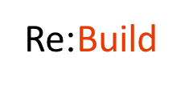
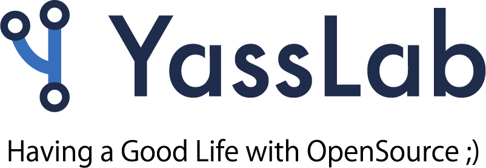

こんにちは世界！
第2回 Rails Girls Okinawa が開催されます！
Ruby on Railsのすてきな世界を私達と一緒に体験しましょう！
2日間のワークショップは無料です。お気軽にご参加ください！
参加お申し込みは締め切らせていただきました。
ご応募いただいた皆様ありがとうございました。
概要 コーチに教えてもらいながらプログラムを設計して、プロトタイプを作り、コーディングします。
必要なもの 自分のノートパソコン、やる気とキラリと光るイマジネーションを持ってきてください！
コーチ募集は終了しました。たくさんのコーチのお申し出をいただき、ありがとうございました。
| 19:00 - 21:00 |
インストール・ ディまずは、参加者同士、お互いに知り合いになりましょう。ご自分のノートパソコンをお持ちください。 それぞれのパソコンにRubyとRailsをインストールし、Rubyプログラミングの最初の一歩をコーチとともに始めてみましょう。 |
|---|
| 10:00 - 11:00 |
レジストレーション金曜日にRuby on Railsのインストールトラブルがあれば、朝のうちに解決しておきましょう。 金曜日にすべてうまく行ったひとは参加しなくてもOKです。10:30ごろからのんびりきてください。 |
|---|---|
| 11:00 - 11:30 |
開会一日の流れの説明。オーガナイザーから一言。 |
| 11:30 - 13:00 |
ワークショップはじめてのウェブアプリにトライしてみよう！ |
| 13:00 - 14:00 | ランチ |
| 14:00- 14:30 |
ライトニングトークス |
| 14:30 - 18:00 |
ワークショップ自分流のウェブアプリに変えてみよう！ |
| 18:00 - |
アフターパーティー & コーチによるライトニングトークス参加者、コーチ、スタッフによるパーティです。ワークショップで聞き損ねたことや RubyやRailsのこと、ステップアップの方法など、コーチに気軽に質問してみましょう。 |
会場:
宜野湾ベイサイド情報センター(Gwave)
Gwave Cafe / Gwave Incubate
沖縄県宜野湾市宇地泊558-18 地図
ご支援いただけるパートナーを募集しております。 こちらのフォームからご応募ください。
Rails Girls Okinawa は以下のすばらしいパートナーとの共同開催です。
 株式会社Re:Buildでは◆自社サービス開発、受託開発をしています。 自社サービスはエンジニア同士の仕事紹介サービス「Tadoru」を開発・運営しています。 ◆リモートワーク可能な自由な働き方を推奨していきます。 ◆今は社長含め、全員がエンジニアです。 開発環境や社内制度など、とにかくエンジニアが働きやすい環境づくりを心がけいきます！ 社員の平均年齢は26歳。
 YassLab 株式会社ではRailsチュートリアルやRailsガイドを運営しています。沖縄と東京にそれぞれ作業拠点がありますが、全員がリモートワークで仕事をしている会社です。Okinawa.rb や CoderDojo、Ryukyufrogs や未踏ジュニアなど、様々なコミュニティと一緒に活動させていただいております。
 みんなのウェディングは、国内6,000以上の結婚式場情報、先輩花嫁による実体験に基づいた「本音口コミ」、「実際の費用明細」など、花嫁・花婿が真に知りたい情報から結婚式場を探せる口コミサイトです。
私達は、花嫁花婿が願う最高の結婚式を実現するために、「結婚式の選択肢をふやす」ことをミッションとして、花嫁花婿がより多くの情報から適切に取捨選択できるサイトづくりを進めています。
それだけでなく、みんなの『大切な日』をふやすをミッションに、ユーザーファーストなサービス開発を進めています。
みんなのウェディングは、国内6,000以上の結婚式場情報、先輩花嫁による実体験に基づいた「本音口コミ」、「実際の費用明細」など、花嫁・花婿が真に知りたい情報から結婚式場を探せる口コミサイトです。
私達は、花嫁花婿が願う最高の結婚式を実現するために、「結婚式の選択肢をふやす」ことをミッションとして、花嫁花婿がより多くの情報から適切に取捨選択できるサイトづくりを進めています。
それだけでなく、みんなの『大切な日』をふやすをミッションに、ユーザーファーストなサービス開発を進めています。
 Sansan株式会社は、「出会いからイノベーションを生み出す」をミッションに掲げ、法人向け名刺管理サービス「Sansan」と個人向け名刺アプリ「Eight」を提供しています。「Eight」はRuby on Railsで開発しており、取り込んだ名刺から、いつでも活用できるあなただけのビジネスネットワークを構築することができます。Rails Girlsでの皆さんとの「出会い」を楽しみにしています。
Sansan株式会社は、「出会いからイノベーションを生み出す」をミッションに掲げ、法人向け名刺管理サービス「Sansan」と個人向け名刺アプリ「Eight」を提供しています。「Eight」はRuby on Railsで開発しており、取り込んだ名刺から、いつでも活用できるあなただけのビジネスネットワークを構築することができます。Rails Girlsでの皆さんとの「出会い」を楽しみにしています。
 株式会社SmartHR社会保険・労働保険それ自体はすばらしい制度ですが、手続きの不便さ、煩雑さ、わかりづらさは否めません。私たちはこのアナログな領域を、テクノロジーと創意工夫でもっとシンプル、かんたん、便利に変えていきます。 経営者は本業に、人事担当者は採用や制度づくりに集中でき、従業員はよりよい環境で安心して働くことができる社会を 私達は SmartHR で実現します。
株式会社SmartHR社会保険・労働保険それ自体はすばらしい制度ですが、手続きの不便さ、煩雑さ、わかりづらさは否めません。私たちはこのアナログな領域を、テクノロジーと創意工夫でもっとシンプル、かんたん、便利に変えていきます。 経営者は本業に、人事担当者は採用や制度づくりに集中でき、従業員はよりよい環境で安心して働くことができる社会を 私達は SmartHR で実現します。
 メドピアは現役医師が経営するヘルステックカンパニーです。国内医師の3人に1人が参加するコミュニティサイトで医師を支援すると共に、医師や管理栄養士のネットワークを活かして一般向けのヘルスケアサービスを展開しています。
メドピアは現役医師が経営するヘルステックカンパニーです。国内医師の3人に1人が参加するコミュニティサイトで医師を支援すると共に、医師や管理栄養士のネットワークを活かして一般向けのヘルスケアサービスを展開しています。
 esa は、「情報を育てる」をコンセプトに作られた、自律的なチームのための情報共有サービスです。日報や議事録、仕様書やマニュアル、アイデアの共有など様々な種類の情報共有に適しており、Markdownで書ける使い勝手のよいインターフェイスで、チームのより良いコラボレーションをサポートします。
esa は、「情報を育てる」をコンセプトに作られた、自律的なチームのための情報共有サービスです。日報や議事録、仕様書やマニュアル、アイデアの共有など様々な種類の情報共有に適しており、Markdownで書ける使い勝手のよいインターフェイスで、チームのより良いコラボレーションをサポートします。
 株式会社アカツキは、心が求める活動がみんなの幸せの原動力となる世界「A Heart Driven World.」をビジョンとして掲げ、エンターテインメントをグローバルに展開しています。 アカツキエンジニアは「テクノロジーを活用して、人の感情をもっと豊かに動かし、ワクワクさせることができる」という信念のもとRubyなどのOSSを活用し、また積極的に貢献しています。
株式会社アカツキは、心が求める活動がみんなの幸せの原動力となる世界「A Heart Driven World.」をビジョンとして掲げ、エンターテインメントをグローバルに展開しています。 アカツキエンジニアは「テクノロジーを活用して、人の感情をもっと豊かに動かし、ワクワクさせることができる」という信念のもとRubyなどのOSSを活用し、また積極的に貢献しています。
 リンクアンドモチベーションは、世界初の「モチベーション」にフォーカスした企業です。これまでは組織人事コンサルティングや研修を提供する企業でしたが、これからは「すべての組織と個人の変革」に向けてテクノロジー企業に転換しようとしています。この第二創業期を共に創って頂けるエンジニア・プロダクトマネジャー・デザイナーの方々を積極募集しています。
リンクアンドモチベーションは、世界初の「モチベーション」にフォーカスした企業です。これまでは組織人事コンサルティングや研修を提供する企業でしたが、これからは「すべての組織と個人の変革」に向けてテクノロジー企業に転換しようとしています。この第二創業期を共に創って頂けるエンジニア・プロダクトマネジャー・デザイナーの方々を積極募集しています。
 クラッソーネは、「豊かな暮らしで人々を笑顔に」を
ミッションに掲げ、家づくり分野でユーザー（施主様）とパートナー（建築工事会社）のマッチングサービス 「
くらそうね」を展開しています。現在、ユーザーが簡単に工事会社を比較でき、安心して工事を発注できる、解>体工事マッチングプラットフォームを、Ruby on Railsで開発しています。この新サービスを一緒につくっていた
だける仲間を募集中です。
クラッソーネは、「豊かな暮らしで人々を笑顔に」を
ミッションに掲げ、家づくり分野でユーザー（施主様）とパートナー（建築工事会社）のマッチングサービス 「
くらそうね」を展開しています。現在、ユーザーが簡単に工事会社を比較でき、安心して工事を発注できる、解>体工事マッチングプラットフォームを、Ruby on Railsで開発しています。この新サービスを一緒につくっていた
だける仲間を募集中です。
 GitHub はソフトウェアの共同開発をするための最高の環境を開発・提供しています。1000 万人以上のユーザーが友だち、同僚、クラスメートと、時にはまったく知らない人とでさえ、コードなどを共有して素晴らしいプロジェクトを行っています。
GitHub はソフトウェアの共同開発をするための最高の環境を開発・提供しています。1000 万人以上のユーザーが友だち、同僚、クラスメートと、時にはまったく知らない人とでさえ、コードなどを共有して素晴らしいプロジェクトを行っています。
 私たち永和システムマネジメントは Ruby や Ruby on Railsを活用したアプリケーションをアジャイルに構築できる日本有数のソフトウェア受託企業です。私たちはお客さまの投資を最大化すべく研鑽を続けています。また、Rubyコミュニティの支援も2006年から積極的に行っています。
私たち永和システムマネジメントは Ruby や Ruby on Railsを活用したアプリケーションをアジャイルに構築できる日本有数のソフトウェア受託企業です。私たちはお客さまの投資を最大化すべく研鑽を続けています。また、Rubyコミュニティの支援も2006年から積極的に行っています。
 日本Rubyの会は、Rubyの利用者の支援とRuby(とRubyのライブラリ)開発者の支援を目的とした一般社団法人です。現在は、ドキュメントの整備や、イベントへの参加協力等を中心に活動しています。
日本Rubyの会は、Rubyの利用者の支援とRuby(とRubyのライブラリ)開発者の支援を目的とした一般社団法人です。現在は、ドキュメントの整備や、イベントへの参加協力等を中心に活動しています。
参加費はどのくらいかかりますか？ 無料です。申し込むときにはわくわくした気持ちだけあればいいです。
どのような人が参加するのでしょうか？ コンピュータを使ったことがある女性ならだれでも参加できます。これまでに開催されたRails Girlsイベントには様々な年齢の女性がやってきました。ご自分のノートパソコンをお持ちください。
男性も参加できますか？ 参加できます。ただし、必ずウェブアプリを作りたがっている女性と一緒に参加してください。申し込み人数が多い場合はお断りすることがあります。
プログラミングの経験があります。手伝うことはできますか？
はい！Rails Girls Okinawa ではコーチとしてお手伝いしてくださる方を募集する予定です。
準備が整い次第このサイトやTwitterなどでお知らせいたします。
 Rika Nakaza
Rika Nakaza Mayumi Emori
Mayumi Emori